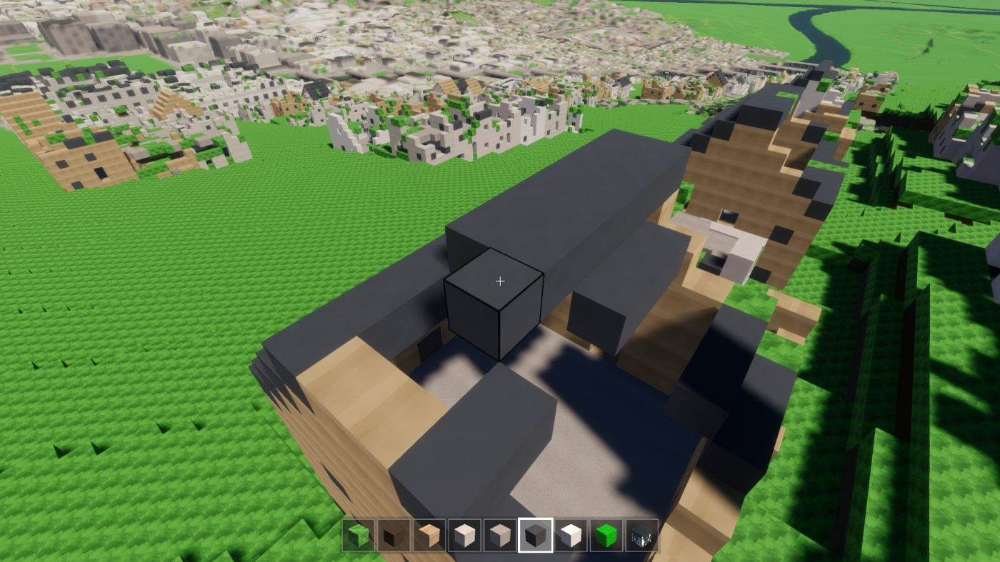
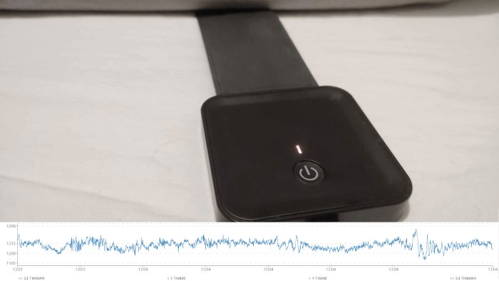
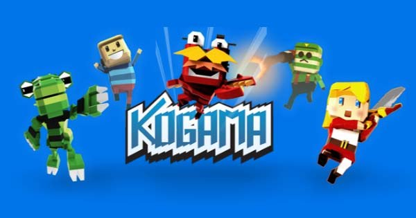

Programming professionally since 2017, on systems that have to keep up: multiplayer games, a 120 Hz sensor product for elderly care, and my own voxel engine.
Performance
Own project · voxel engine · sole developer · 2021 – now
An endless block world you can fly through, build whole cities in, and tear apart. Its terrain is generated from plate tectonics, rock types and rivers, and it is seamlessly integrated with Unity physics.

- View distance
- 20 km, with octree level of detail
- Streaming
- Fast enough for a 140 km/h race drone
- Frame rate
- Above 60 FPS on a mid-range GPU (RTX 2080)
- Edits
- Building and large-scale destruction appear whole, in one frame
- Size
- About 30,000 lines of C#
- Stack
- Unity 6, C#, Burst, HDRP
Videos: youtube.com/@gomFPV
Real-world application
Cenvigo · elderly-care monitoring · tech lead · 2020 – 2024, remote

Camera-free monitoring for care homes. A thin sensor band under the mattress picks up heartbeat, breathing and movement, and night staff are alerted when a resident has been out of bed too long.
- Signal
- 120 Hz per bed, sensitive enough to register heartbeat and breathing
- Detection
- Bed presence and movement from a noisy signal
- Chain
- Bluetooth sensor bands, Android app, .NET back end, Blazor and React front ends
- Live view
- Real-time graphs of bed presence and movement, drawn in SVG
Product site: cenvigo.com
Multiplayer
Multiverse · KoGaMa (game-creation platform) · programmer · 2016 – 2019, Copenhagen

A platform where anyone could create, share and play multiplayer games, in the browser, on PC and on mobile, in the same space as Roblox. Its players still miss it: since it shut down, fans have started a revival project.
- Players
- 18 million registered
- Games
- More than 3 million created by players
- Platforms
- PC, WebGL and Android
Experience
- 2024 – now Independent development · voxel engine, Life of a Peasant, game projects with others
- 2020 – 2024 Cenvigo · senior full-stack developer, tech lead · remote
- 2016 – 2019 Multiverse · programmer on KoGaMa · Copenhagen
- 2014 – 2017 The Game Assembly · Game Programming